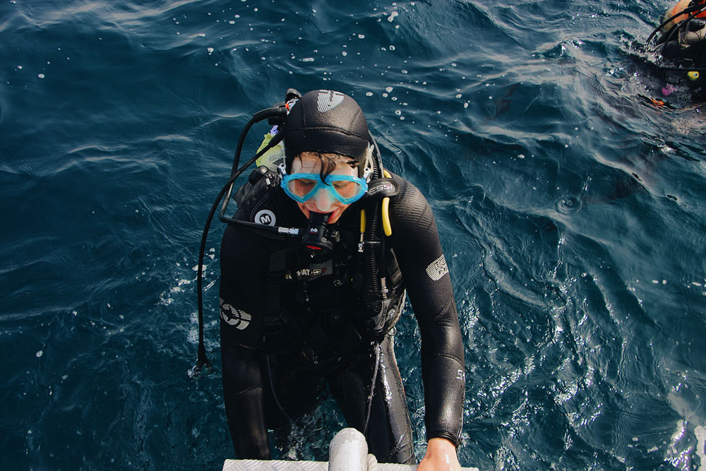
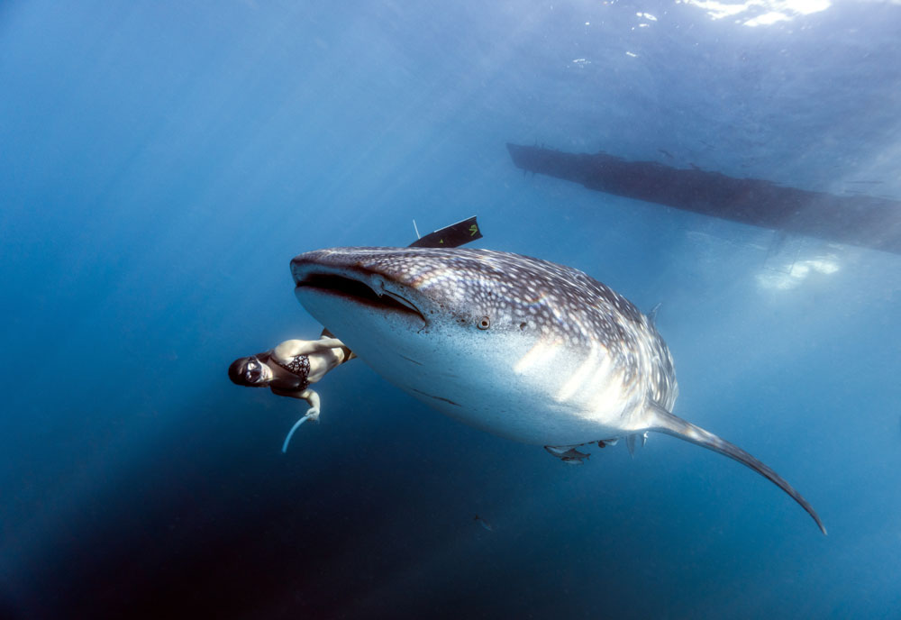
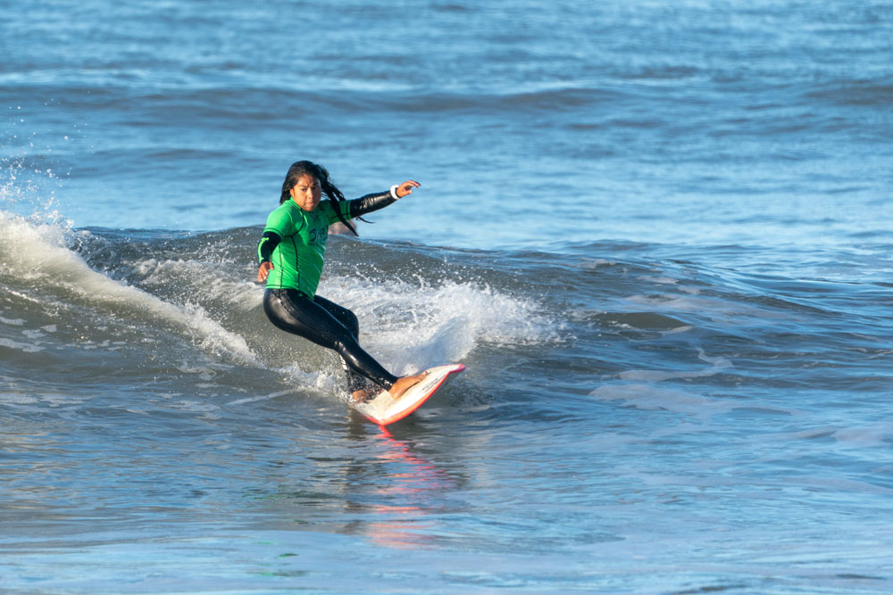

Buceo Profesional Un Mundo lleno de maravillas.
El buceo profesional hace referencia a las actividades de buceo con fines no recreativos. Los buzos profesionales deben seguir una formación y un entrenamiento específico, pues su actividad implica alto riesgo..

Buceo a Pulmon Descubre que tan profundo puedes llegar
El buceo a pulmón es una de las modalidades mas arriesgadas, llegando incluso hasta más de 200 metros de profundidad. Todo Buceo Lo que comenzó siendo una técnica de pesca se ha convertido en una modalidad extrema del buceo

Kitesurfing Amaras estar deslizandote en las olas
El kitesurf o kitesurfing e incluso se ha propuesto la adaptación tablacometa, es un deporte de deslizamiento que consiste en el uso de una cometa de tracción, que tira del deportista por cuatro o cinco líneas, dos fijas a la barra, y las dos o tres restantes pasan por el centro de la barra y se sujetan al cuerpo
